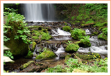

平成21年度の活動内容
- 青森県内の「美しい日本の歩きたくなるみち500選」認定コース。
奥入瀬渓流をはじめとする“青森の秋”を感じませんか？ -
- 実施日／２００９年１０月３０日～１１月１日
- 10月30日 八戸前泊
- 10月31日 種差海岸
- 10月31日 下北半島
- 11月01日 十和田奥入瀬渓流ふくち里山バンデパーク
- 申し込み期限／９月３０日（水）

詳細PDF(995KB)
詳細PDF(995KB)
- ～美しいブナ林の紅葉と渓流のせせらぎを歩く～
奥入瀬渓流全区間１４ｋｍ（三里半）、約４～５時間のコースです。 -
- 実施日／２００９年１０月３１日、１１月１日
- 集合場所／奥入瀬渓流館／１０：００スタート
- コース／奥入瀬渓流館（焼山） → 奥入瀬渓流１４ｋｍ → 子ノ口（遊覧船） → 遊覧船移動 → 休屋
- 申し込み期限／１０月２６日（月）
- ～奥入瀬渓流見所区間 約３ｋｍ（約１時間）～
十和田西高校の生徒さんの協力による自然ガイドが同行します。 -
- 実施日／１０月３１日、１１月１日
- 集合場所／休屋・焼山各駐車場の受付テント
- スタート／１０月３１日、１１月１日、９：００から２０分ごとに出発、最終１４：００／各回先着８名
- [Aコース]／休屋→シャトルバス→石ヶ戸→徒歩3km（約1時間）→雲井の滝→シャトルバス→休屋
- [Bコース]／焼山→シャトルバス→石ヶ戸→徒歩3km（約1時間）→雲井の滝→シャトルバス→焼山
- ～日本一のブナの巨木を見に行こう～
ボランティアガイドの協力による自然ガイドが同行します。 -
- 実施日／１０月３１日、１１月１日
- 集合場所／焼山各駐車場の受付テント
- スタート／１０月３１日、１１月１日、焼山テントから９：００、１１：００、１３：００／各回先着２０名
- コース／焼山→ ツアーバス→ 徒歩（５分）→ 日本一のブナ→ 徒歩（５分）→ ツアーバス→ 石ヶ戸→焼山